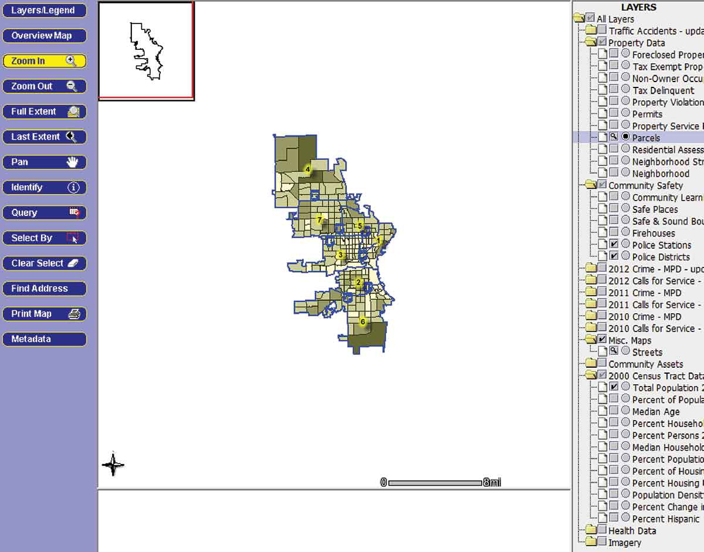
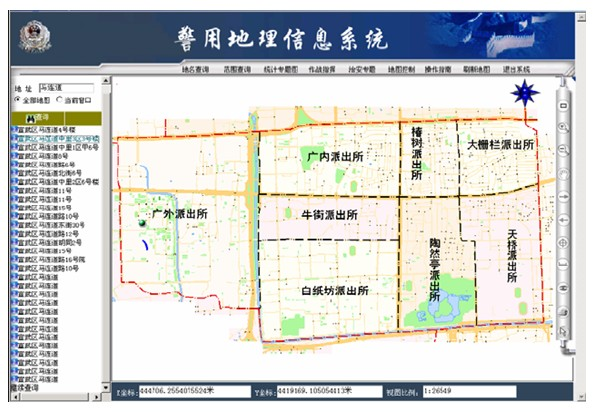

1.国外PGIS的发展历程
20世纪60年代，Harvard大学开发了一款名为 SYMAP的程序用以绘制犯罪信息地图，但犯罪信息制图在 犯罪与公共安全领域的融合却经历了漫长的时间。70年代，
由于计算机软硬件和GIS发展水平的限制，犯罪信息地图的 使用难以实现大众化，GIS在犯罪分析和犯罪制图中的应用 受阻，只有美国大城市的警察机构才具备使用资格。到80
年代后期，客户端和服务端以及数据通信系统的出现，降低 了GIS的使用成本，犯罪信息地图的发展迎来新的生机。
1871年，欧洲地理学家在比利时安特卫普召开了第一届国际 地理大会。GIS和计算机制图相结合的方法引起了欧美发达国家极高的兴趣，提供了充足的人力物力财力去资助GIS在犯罪分析领域的研究工作。
自20世纪90年代以来，计算机的软硬件技术发生质
的飞越，计算机制作成本大幅下降，各种制图技术不断创新与发展，GIS被应用到社会生产生活的各方面，进入了应用大众化、深度化的发展阶段。国外已将犯罪地理信息作为办案的重要情报，利用GIS的空间分析能力对地理情报进行分析与整合，精准定位案发地点，记录犯罪数据，统计犯罪频率与地理分布的空间关系，使警务工作与GIS的融合进入快速发展期。
GIS和犯罪信息电子制图迅速成为美国警察机构执法信 息系统的重要应用程序，将地理学与公共安全紧密结合，形成了独立的研究领域，称为地理学与公共安全（Geography & Public
Safety，简称 G&PS）。1992年，国际地理信息科学与技术大会（CPGIS）成立，美国定期举行“公共安 全方面的制图与分析”学术会议，吸引地理信息领域的专家
学者、从业人员进行业务交流，以获得最前沿的GIS技术。 同时美国国家地理学会（AAG）在PGIS领域的专家深入到
各地执法机构进行实践，将理论研究和实践工作相结合，针对各地出现的不同问题进行集中解决。

到21世纪，经历了“9.11”事件的美国，为应对地理信息安全危机，逐步建立并完善以GIS为基础的扁平化指挥系统。同时，在社会安全领域，确立了由多部门组成的紧急预警、快速反应机制。在该机制下建立的安全指挥调度系统
在2002年美国盐城冬奥会安保工作上大放异彩，堪称警务安全工作与GIS相结合的应用典范。
2.国内PGIS的发展历程
随着计算机、遥感、全球定位系统（GPS）、无线通信等技术的不断发展和应用，警用地理信息系统在我国的建设和发展也得到了越来越多的重视和支持。警用地理信息系统是一种将空间信息、时间信息与各类警务数据进行集成的综合信息处理系统，它可以为公安机关提供精准、实时、动态的指挥决策支持，对于加强警务现代化、提高公安工作效率和水平，有着重要的作用。
国内警用地理信息系统的发展历程可以追溯到上世纪80年代末期，当时一些省市公安机关已经开始意识到运用地理信息技术进行犯罪调查处理的重要性，并开始对相关技术进行研究。而1993年，国家计委组织编制了《国家地理信息发展战略纲要》，标志着我国地理信息产业发展进入了统筹规划阶段。同年，北京市公安局成立了一个专门从事地理信息系统应用的小组，开始实践警用地理信息系统的建设。

20世纪90年代，随着计算机、GPS、遥感、移动通信等技术的广泛应用，地理信息系统出现了一系列的商业软件，其中不乏诸如ArcGIS、MapInfo等著名品牌，这些软件为警用地理信息系统的建设和发展奠定了基础。
2002年，上海市公安局开发了“上海市公安警务地理信息系统”，成为我国最早的警用地理信息系统之一。该系统采用的是两级服务器结构，前端使用WinMap
GIS，后台使用Oracle数据库，实现了对本市公安机关的各类数据的统一管理、调用和处理，完善了警用地理信息系统在信息化建设中的功能和作用。
随着对警用地理信息系统的认识不断深入，国内地理信息技术得到了快速发展，有关部门也逐步加大了对警用地理信息系统的支持力度，制定了一系列政策和规范，从而推动了我国警用地理信息系统的进一步发展。

2011年，中国公安部正式发布了《警用地理信息系统数据标准》和《公安警务地理信息系统技术规范》，统一了全国各地警用地理信息系统的数据和技术标准，推动了全国警用地理信息系统的标准化、智能化和网络化发展。
近年来，随着人工智能、云计算、大数据等技术的不断创新和发展，警用地理信息系统也进入了一个新的发展阶段。越来越多地使用先进的技术手段，如地图可视化、机器学习、深度学习、智能算法等，进行数据分析和预测，为公安机关提供更科学、更精准的指挥决策支持。
总之，国内警用地理信息系统的发展历程可以说是始于实践、促进了技术进步、不断提高了公安工作效率和水平的一个历程。它在保障公共安全、打击犯罪等方面发挥了巨大的作用，为维护社会的安定和谐做出了重要贡献。